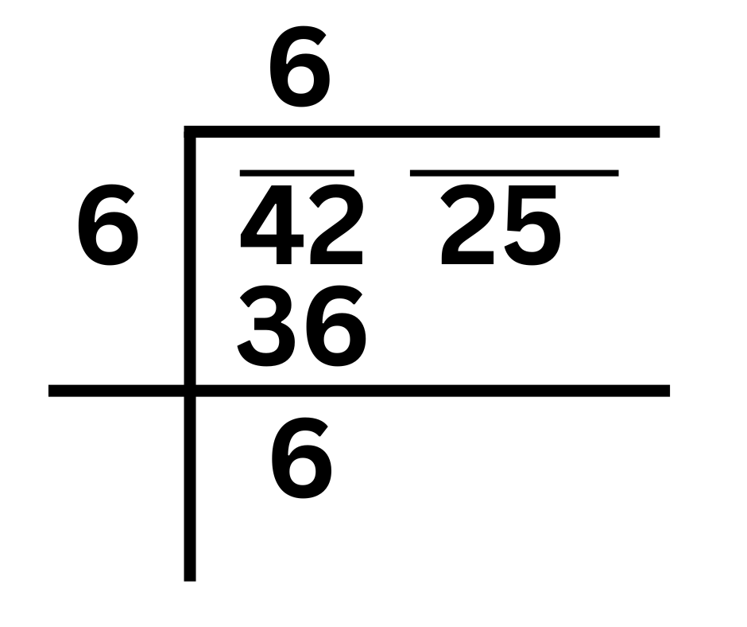

Steps to Find Square Root Using the Division Method
Let's find the square root of 784 using the Division.
Step 1: Group the digits in pairs from right to left
- Start by separating the number into pairs of digits, starting from the right. If there’s an odd number of digits, the first group will be a single digit.
For 784, group it like this: 7 | 84.
Step 2: Find the largest number whose square is less than or equal to the first group
- Now, find the largest number whose square is less than or equal to the first group (in this case, 7). That number is 2 because
- 22 = 4 and 32 = 9, which is too big.
- Write 2 above the line (it's part of the answer) and 4 under the 7, then subtract 7 − 4 = 3.
Step 3: Bring down the next pair
- Bring down the next pair of digits (84) next to the 3, making the number 384.
Step 4: Double the divisor
- Now, double the number you have above the line (which is 2). So, 2 × 2 = 4.
Step 5: Guess the next digit
The next digit of the answer will go both above the line and next to the 4. You need to choose the largest digit d such that 4d × d ≤ 384.
If you try 9, you'll get 49 × 9 = 441, which is too big. But 8 works because 48 × 8 = 384.

Step 6: Subtract and repeat
- Write 8 next to the 2 in the answer. Subtract 384 − 384 = 0. Since the remainder is zero, you're done!
So, the square root of 784 is 28.
Example 2: Find Square root of 4225
Step-1 : Make pair of digits of given number starting with digit at one's place. Put bar on each pair.
Step-2 : Now we have to multiply a number by itself such that the product ≤ 42

Here 6 × 6 = 36 ≤ 42, So divisor is 6 and quotient is 6. Now do the division and get the remainder.
Step-3 : Now , we have to bring down 25 and quotient 6 is multiplied by 2 becomes 12, which is starting digit of new divisor
Step-4 :5 should be the digit at one's place of new divisor because when 125 is multiplied by 5 we get 625.
So new divisor is 125 and next digit of quotient is 5. Now do the division and get the remainder.
Since Remainder is zero, square root of 4225 is 65.